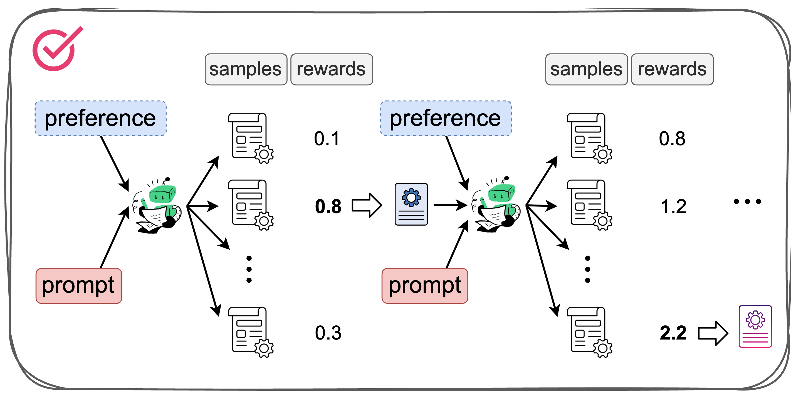
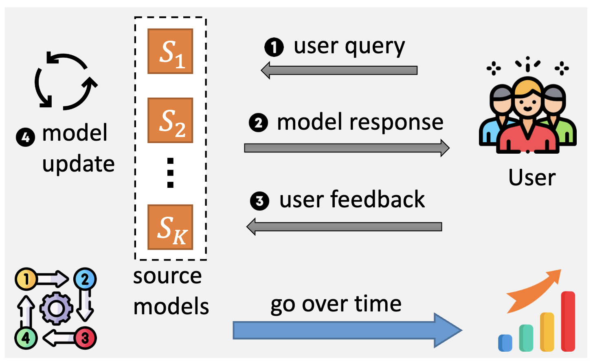
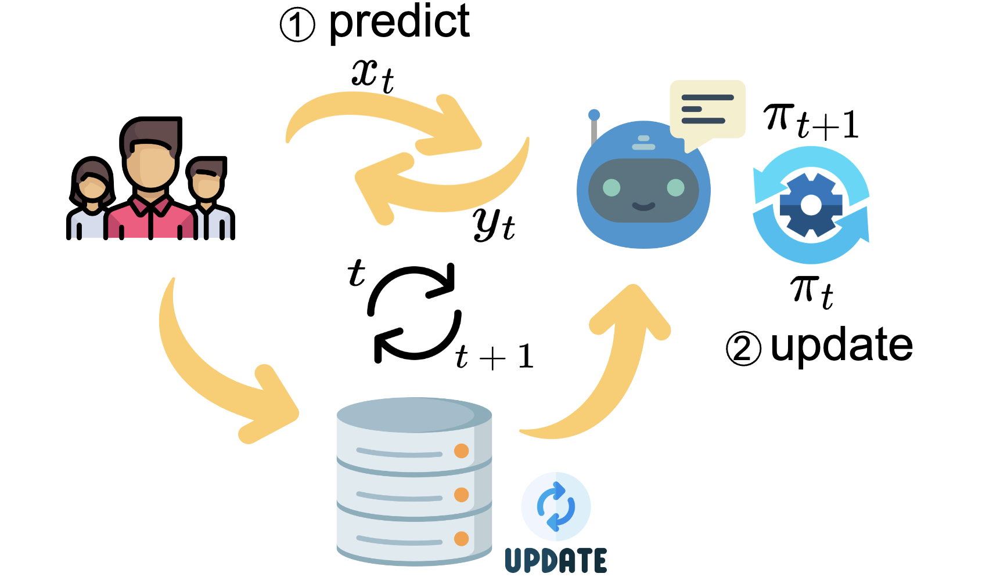
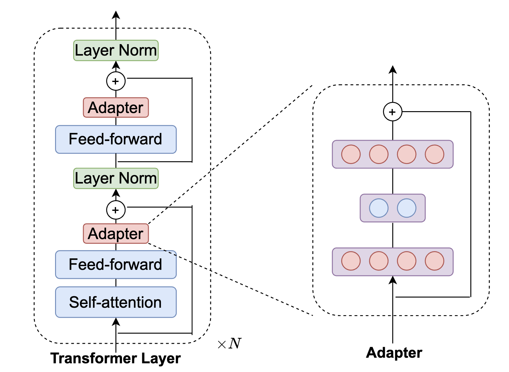
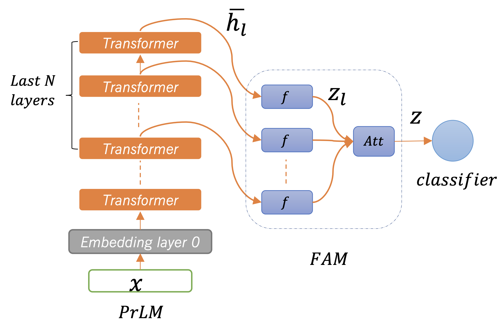

[Google Scholar] [Github]
Bio:
Hi! I am Hai Ye. I am a Ph.D. candidate at the School of Computing, National University of Singapore (NUS), where I am working with prof. Hwee Tou Ng. My research is supported by AISG Ph.D. Fellowship. Before my PhD, I worked with prof. Lu Wang and prof. Wenjie Li.
Research:
I used to study how to enhance the generalization of language models across languages and domains, as well as improve their robustness. Currently, my focus has shifted to studying large language models, with the most recent work focusing on data synthesis to improve alignment.
Contact: hye.me [at] outlook [dot] com
Selected Papers
(* indicates equal contribution)





Academic Services
Last update: 2024